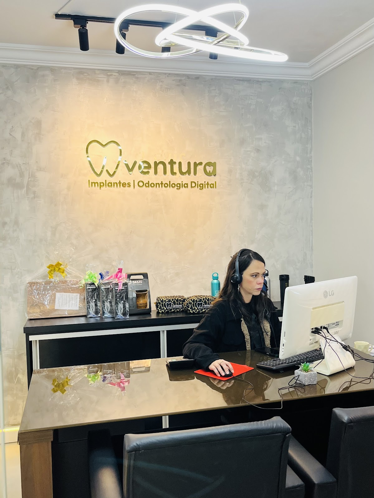

Sorria com segurança
e tecnologia.
Na Ventura Implantes você é atendido com tratamentos personalizados, planejamento 100% digital e uma equipe preparada para transformar sorrisos com qualidade do início ao fim — do diagnóstico ao implante guiado por computador.

- CentroSapucaia do Sul — RS
- 2,4 mil+Seguidores no Instagram
- DigitalPlanejamento guiado do sorriso
Implantodontia e Invisalign sob o mesmo teto, com planejamento digital
A Ventura Implantes fica no Centro de Sapucaia do Sul e une implantes dentários, Invisalign e odontologia digital em um único atendimento. O foco é claro: tratamentos personalizados, com tecnologia e uma equipe preparada para transformar sorrisos com qualidade e segurança.
Antes de qualquer indicação, o caso passa por avaliação individual — a proposta é que você entenda o caminho todo, do planejamento guiado por computador ao acompanhamento após o procedimento.
Esse cuidado aparece na nota mantida no Google: 5,0 estrelas em 244 avaliações, um volume raro para uma clínica odontológica de bairro.
Volte a sorrir com segurança e confiança. Oferecemos tratamentos personalizados, tecnologia e uma equipe preparada para transformar sorrisos com qualidade e segurança.
A tecnologia que muda a experiência do tratamento
Cada etapa pensada para reduzir incerteza — e imprevisto — do seu lado.
Planejamento digital do sorriso
Simulação guiada antes de qualquer procedimento, para que você veja o caminho antes de decidir.
Implantes guiados por computador
Posicionamento planejado com precisão digital, pensado para reduzir o tempo de cadeira.
Atendimento sem enrolação
Avaliação, diagnóstico e plano de tratamento explicados antes de qualquer aplicação.
Acompanhamento contínuo
O tratamento não termina no procedimento — o retorno faz parte do plano.
O que a Ventura Implantes faz por você
Cada indicação parte de uma avaliação individual, sem procedimento aplicado sem explicação.
A tecnologia por trás de cada sorriso
Dois exemplos de como o planejamento digital muda o que acontece na cadeira.
Implante guiado por computador
O posicionamento do implante é planejado em software antes da cirurgia, a partir de imagens digitais do seu caso.
Sequência de alinhadores Invisalign
Cada alinhador move os dentes em pequenas etapas, seguindo uma sequência definida no planejamento digital do caso.
244 avaliações, sempre com a nota máxima
-
Volume raro
244 avaliações é um volume alto para uma clínica de bairro — sinal de fluxo constante de pacientes satisfeitos.
-
Nota máxima consistente
5,0 estrelas não é uma média puxada por poucas avaliações — é o resultado mantido ao longo do tempo.
-
Reputação local
Antes de fechar, quem pesquisa "dentista Sapucaia do Sul" encontra essa reputação construída em avaliações reais.
Números de avaliações e nota extraídos do perfil público da Ventura Implantes no Google, consultado pela nossa equipe.
Do primeiro contato ao sorriso pronto
Você chama no WhatsApp
Conta o que te incomoda ou o que gostaria de resolver, sem compromisso.
Avaliação com exame digital
Análise do seu caso com imagens digitais, antes de qualquer indicação de tratamento.
Plano personalizado
Definição do caminho certo para o seu objetivo, com cada etapa explicada antes de começar.
Acompanhamento
Retorno para avaliar o resultado e ajustar o que for necessário ao longo do tratamento.
No Instagram da Ventura Implantes, o dia a dia da clínica, os bastidores do planejamento digital e conteúdo educativo sobre implantes e Invisalign são publicados com frequência.
Perguntas que quase toda pessoa traz na primeira conversa
Respostas gerais para começar a entender o assunto. A indicação real é sempre feita após avaliação individual.
Vamos cuidar do seu sorriso com a tecnologia que ele merece?
Sem compromisso. Conta o que você procura e a equipe da Ventura Implantes te explica o caminho.